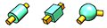
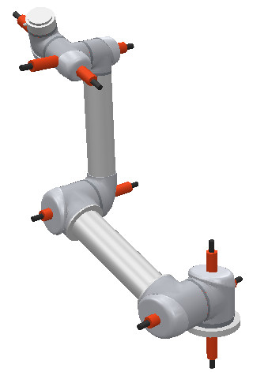
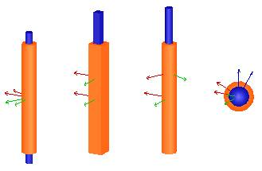
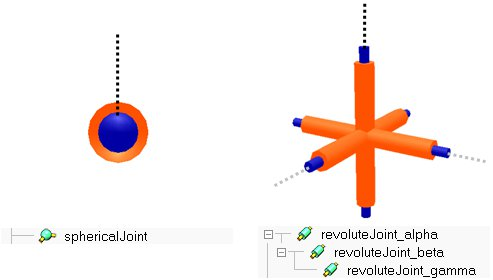
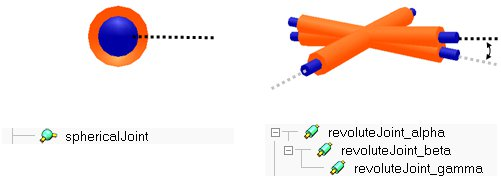

|

Joints 
A joint is an instance of the joint type, which in turn derives from the sceneObject type. It allows for a relative movement between its parent and its children. When a parent-child relationship is built between a joint and an object, the object is attached to the joint's second reference frame, thus, a change of the joint's intrinsic linear/angular position is directly reflected onto its children. A joint can operate in different modes. A joint is added to a scene with [Add > Joint]. Refer also to sim.scene:createObject and joint-related methods and properties.

[Robotic manipulator with highlighted joints]
4 types of joints are supported:

[Revolute joint, prismatic joint, screw and spherical joint]
Revolute joints have one intrinsic DoF and are used to describe a rotational movement between objects. The rotation happens about a joint's reference frame's z-axis
Prismatic joints have one intrinsic DoF and are used to describe a translational movement between objects. The translation happens along a joint's reference frame's z-axis
Screws have one intrinsic DoF and are used to describe a movement similar to a screw between objects. A lead parameter defines the amount of translation for a full rotation. The translation/rotation happens along/about a joint's reference frame's z-axis
Spherical joints have three intrinsic DoFs and are used to describe a rotational movement between objects. In some situations, a spherical joint can be thought of as 3 concurrent and orthogonal joints, that are parented in a hierarchy-chain. The analogy is however only valid while all revolute joints keep an orientation distinct from any of the other two: indeed, should two joints come close to coinciding, a singular situation might appear and the mechanism will lose one DoF. This does never happen with spherical joints, which are internally handled to avoid this kind of situation:

[Two equivalent mechanisms (in this configuration): spherical joint (left) and 3 revolute joints (right)]

[Two non-equivalent mechanisms: the right configuration is close to a singularity]
Refer also to joint.joint.type, joint.bounds, joint.cyclic, joint.joint.position, joint.joint.quaternion and joint.configuration.
|